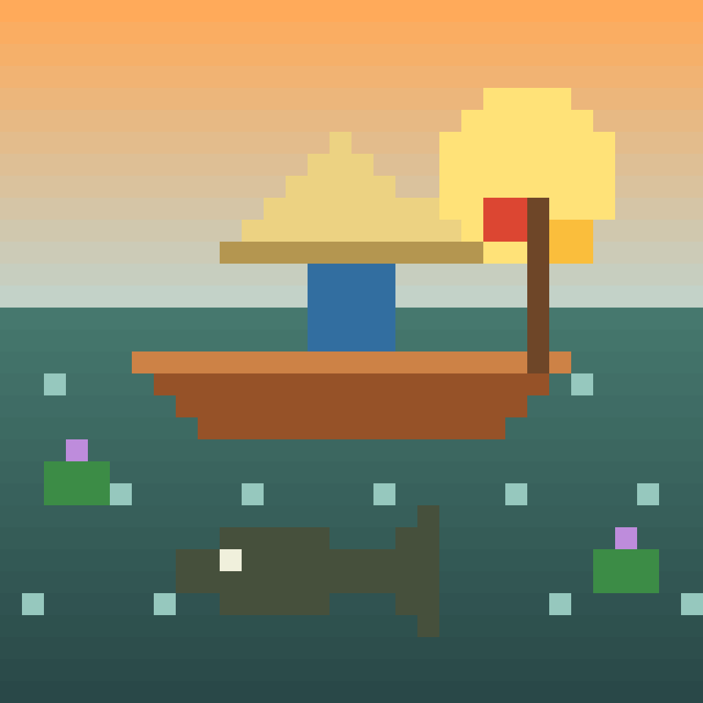
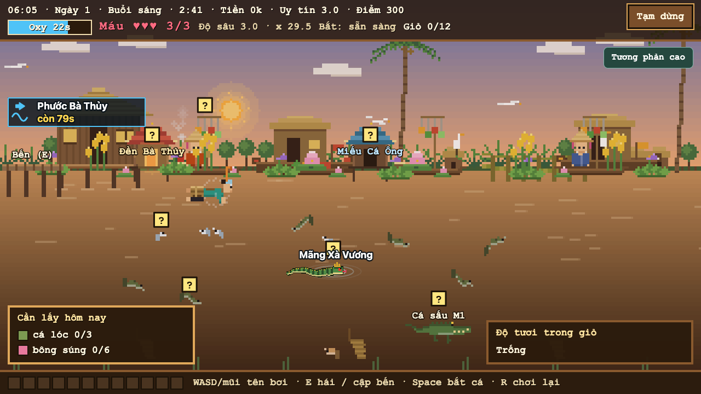
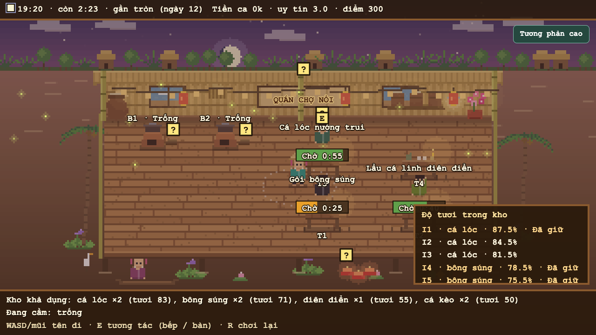

Quán Ăn Chợ Nổi
Sáng lặn sông bắt cá · Tối mở quán trên chợ nổi
Bàn 6
☀ Buổi sáng trên sông

Hái bông súng, bắt cá
Oxy · Máu
Cá Sấu Năm Chèo
Mãng Xà Vương
Đền Bà Thủy · Miếu Cá Ông
☾ Buổi tối ở quán

Khách gọi món, chờ có hạn
Độ tươi từng con cá
Trăng đổi theo ngày
Thẻ truyền thuyết “?”